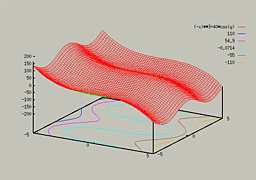
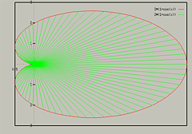

Introduction to GnuPlot
College of Natural Sciences Computing Laboratories
University of Northern Iowa
Cedar Falls, IA 50614

Gnuplot is a command-line driven program for producing 2D and 3D
plots. Although it doesn't have as many features as some of the
commerical mathematical software available, it isn't as complex to use
as packages such as Mathematica or Matlab. It is ideal for a users you
only need a plot of a graph, and who don't want to learn a major
tool.
The features and topics on Gnuplot covered in this document include :
If you have questions at any time, you can access the on-line help by typing
help within Gnuplot. Gnuplot has a very good help system.
College of Natural Sciences /
University of Northern Iowa /
manager@cns.uni.edu
Copyright © 1996 College of Natural Sciences. All Rights Reserved.
Last Modified: 11/27/96